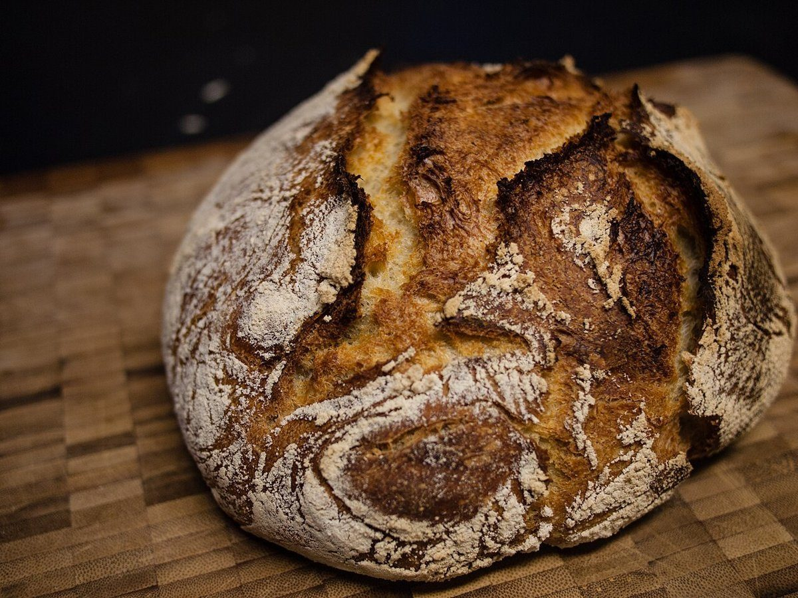
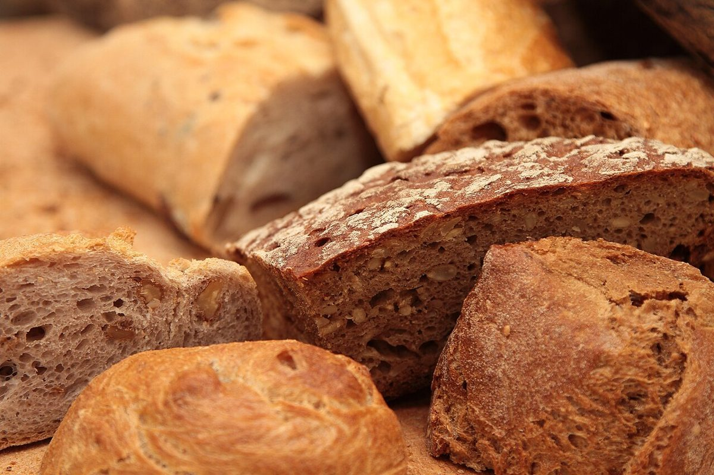
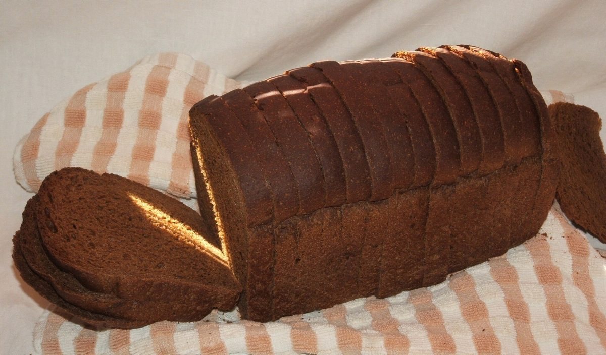
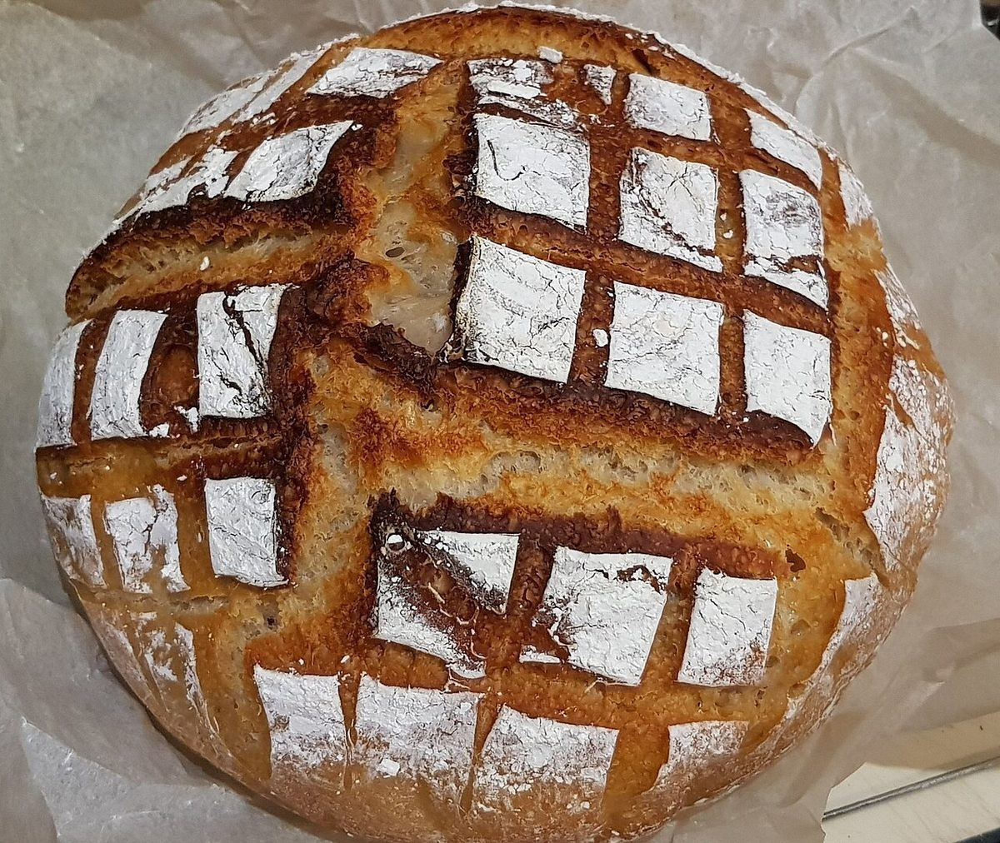

MULTI-TAPパン屋
HARAPECOPAIN
4272 7326 7246
三重県四日市市笹川１丁目８１のパン屋「hara peco pain」のご案内ページです。営業時間・メニューなど詳しいことは準備中。電話は059-329-5077、Instagramもご覧ください。

制作側の連想
屋号を、電話のテンキーで打つと
打ち方
ひと文字ずつ、キーを押す回数
同じキーを続けて押して文字を選ぶ入力で数えてみました。たとえばHは、4のキーを2回です。
HARA
H4×2A2×1R7×3A2×1
4272PECO
P7×1E3×2C2×3O6×3
7326PAIN
P7×1A2×1I4×3N6×2
7246待受画面(イメージ)
パンの写真を並べてみる
写真は国外または撮影地不明のフリー素材で、お店のパンではありません。お店・商品を写したものではなく、提供内容を示すものでもありません。




ご案内
お店のこと(確認できたものだけ)
| 所在地 | 三重県四日市市笹川１丁目８１ |
|---|---|
| 電話 | 059-329-5077 受付時間は準備中 |
| 営業時間 | 準備中 |
| 定休日 | 準備中 |
| ご予約 | 準備中 |
| 駐車場 | 準備中 |
| SNS | Instagram @harapeco.pain |